WatXiengKhuan/VIENTIANE,LAO
ワットシェンクアン/ヴィエンチヤン、ラオス
泊まっていたノーンカイのホテルからトゥクトゥクに乗り友好橋へ行き、タイを出国し橋を渡りラオスに入国した。その間約1時間。
たった橋一本渡っただけだが、そこはさすが「人民民主共和国」と謳っているだけある。
物資溢れるタイとはうってかわって物資の質量がぐぐっとダウンしているのが否めない。川ひとつ渡っただけででタイにあれ程溢れていたセブンイレブンが突然なくなったのが一番象徴的だった。
さて、ラオスに入国しトゥクトゥクに乗り一路ワットシェンクアンを目指す。
このワットシェンクアンはワット（タイ語、ラオ語ともに「寺」の意）といいながら現在、宗教活動を行なう施設は無い。
ここを造り上げたのはルアン・プーという僧、といっても従来の仏教僧ではなく仏教ヒンズー教の混合宗教を創設したいわゆる新興宗教さんの開祖である。
その教義（詳しい事は知らないよ）に基づいて造られたのがここ、ワットシェンクアンなのである。
1958年に完成したこの寺、別名ブッダパークの名の通り現在は庭園になっている。
何故こんなことになっているのかといえば、もともとこの地において布教活動をしていたルアン・プーだが当時の社会主義政策と相容れなかったのか、それともラオスじゃ金が集まらなかったのか詳しいところは定かではないが、1977年に布教の拠点を対岸のノーンカイに移転してしまったのである。従ってここは寺としての機能を失ってしまい、ただの庭園になってしまった、と言う訳。
ただし庭園といえども枯山水やらフランス式庭園などという甘ったれた庭園ではない。ルアン・プーの摩訶不思議な教義を具体的に示したマッド幻想庭園なのである。
入口から中に入る。ちょっとお腹が心配になるレベルの屋台の背後に何とも奇妙な造形の建物が見えて来る。
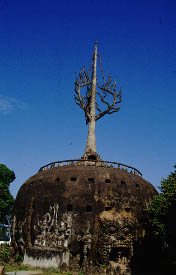 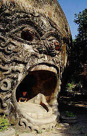
腐って潰れかけたみかんのようなブニャっとした建物だ。建物と呼ぶのもはばかられるような代物だが窓が開いているので取り敢えず暫定的に建物と呼ばせていただく。
正面に廻ると怪物が口を開けていて中に入れるようになっている。早速入ってみよう。
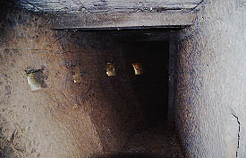 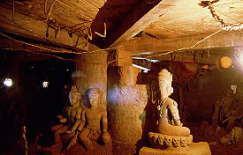
内部は外壁に沿った円状の通路とその通路の内側の丸い部屋とで構成されている。丸い部屋にはオリジナリティ溢れまくる無気味な像が密集している。しかしこの部屋は外周の通路から入れず、通路にある窓から覗き込むだけ。
「何だよ、部屋の中は入れないのかよ〜」などと文句を言いつつ、通路を進むと階段があったので登ってみる。
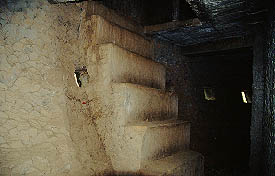
で、二階。ここも一階同様外周通路と丸い部屋の組み合わせ。一回りするとさらに上に登る階段が。意外と高層じゃん。
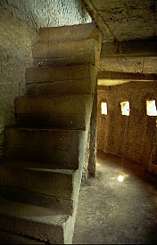で、さらに三階にも階段が。
登るとそこは腐ったみかんの屋上のようなところに出る。
そこで、この庭園の全容が見て取れた。ううう、凄い。マッド全開だ。
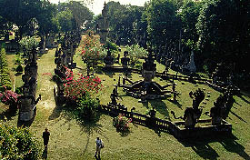
気が触れたとしか思えないような無気味な造形のセメント像がびっしりと並んでいる。
呆気にとられながら眼下の幻想庭園を眺めていると、足元から声がする。
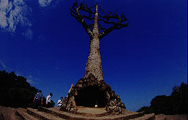
みかんの上に突き刺さったような塔があるのだが、その根元の小さな穴から声は聞こえて来る、と思ったらそこから人が出て来たのだ。しかも我が愚息。え、こんなトコからもここに出て来られるの？
で、我が愚息が出て来た穴に入ってみる。リュックを背負っている身にはかなり狭い。
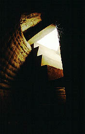 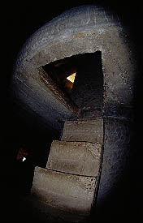
そこには階段があり、降りてみると何と先程入れなかった中の丸い部屋ではないか。改めてそこに並ぶ奇妙なセメント像を真近で見る。何とほとんどが下半身が蛇の蛇人間だったのである・・・
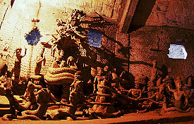 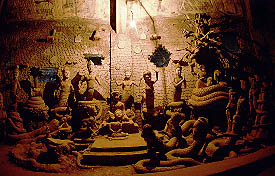
中央部の丸柱に沿ってまた下り階段がある。今度は2階の中の丸部屋だ。ここにいるのは足はあるが何やら変な人達。あまりお友達にはなりたくないタイプの目つきをしている。
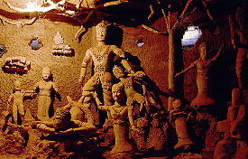 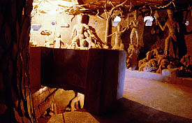
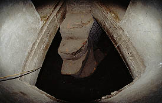で、さらに一階へ。
この辺、もはや階段とはいえない様相を呈している。足を踏み外しそうで結構緊張する。
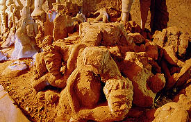 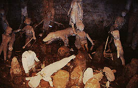
で、最下層には骸骨や破損した人体などがある。もしかしてこれって地獄？ということは二階は人間界で三階は天上界ってことだったのか？蛇人間なのに・・・？
・・・というわけで謎の「腐ったみかん」は意外にも二方向参詣路を備えた複雑な建築であった。
ちなみにどこから出たかと言うと、登った時は気付かなかったのだが、実は二階は外周通路と中の丸部屋が繋がっており、一階に降りた後、また二階に登ってそこから外周通路に出て、そこから一階に降りて、入って来た怪物の口から出たのだよ。
ややこしいので図を書いときます

さて、外に出ていよいよ珍奇コンクリ像の群れに飛び込んでみようか。
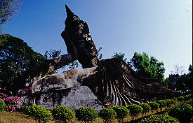 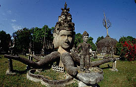
まず目に飛び込んで来るのが大きな寝釈迦像。表情が物凄〜くリラックスしていてヨロシイ。
6本の手を持った謎の3面仏。手のひらにはそれぞれ人が乗っている。頭頂部のデザインもマッド。
ここで何故6本の手なのかとか何故人が乗っているのかとかは質問しないで頂きたい。答えはすべてルアン・プーの頭の中なのだからアタシにゃ答えられません。
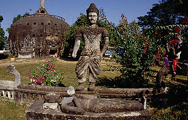 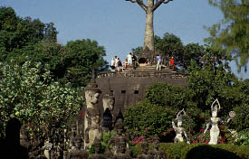
マッド庭園はさらに続く。
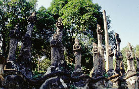 あなたはギリシャ神話ですか？
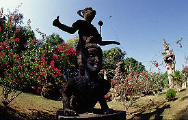 「腕立て伏せ100回〜！」
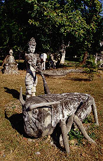 コオロギの足は引っ張っちゃいけませんよ
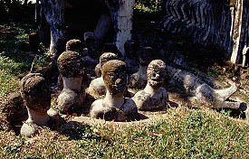 入浴中
などなど庭園内には無数の変な像が満載である。
これ程の数の仏像を作り上げるエネルギーにはただただ呆れるばかりである。と同時にそれらを考える想像力のオリジナリティーも驚嘆に値する。恐ろしい位に唯我独尊の妄想庭園。
これぞアジア版ボマルッツオ庭園。
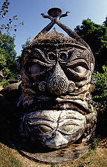 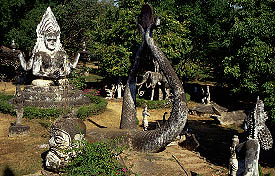 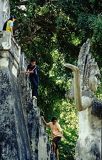
一番奥には凄く急な階段の仏塔などもあり、上からはメコン川がよく見える。
その向こうのノーンカイにはもうひとつの妄想爆発庭園があるという。
よし、明日はノーンカイ側のワットケークにいってみよう。
珍寺大道場 HOME